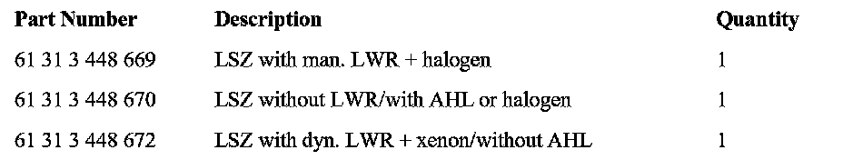
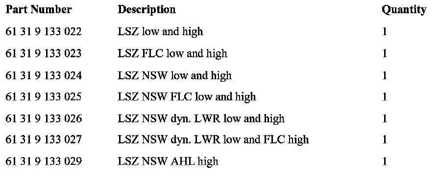
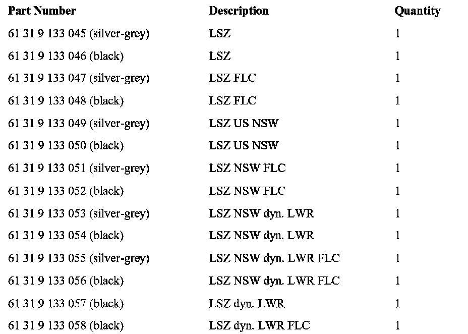

Instruments - Backlighting Fails Intermittently
SI B 62 10 06Instruments
February 2007
Technical Service
SUBJECT
Instrument Cluster Back Lighting Fails Sporadically
MODEL
E46 (3 Series)
E83 (X3) E85 (Z4)
Vehicles produced from August 31, 2003 to July 27, 2006.
SITUATION
The customer may experience brief failure of the instrument cluster back lighting, air condition control or radio. The failure will last between 10-15 seconds.
CAUSE
Light Switching Center (LSZ)
CORRECTION
Replace the LSZ with updated parts as listed below. Please compare with EPC before carrying out the replacement.
PARTS INFORMATION

E83:

E46:

E85:
WARRANTY INFORMATION
Covered under the terms of the BMW New Vehicle Limited Warranty.
Defect Code Refer to KSD
Labor Operation: Refer to KSD
Labor Allowance: Refer to KSD

Disclaimer